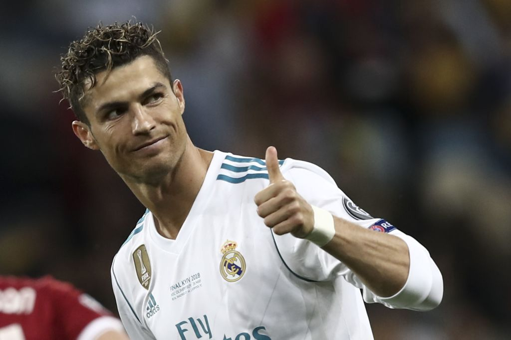

La Liga es la máxima categoría del fútbol profesional en España y por
muchos considerada la mejor liga del mundo. Aquí tienes un resumen de su
historia, actualidad y algunos de sus mejores equipos.
La historia de La Liga
La Liga española de fútbol tiene sus raíces en el desarrollo del fútbol en
España a finales del siglo XIX y principios del siglo XX. El fútbol se
introdujo en España a través de estudiantes y trabajadores británicos, y
rápidamente ganó popularidad entre la población local. La Liga fue
oficialmente fundada en 1929 por iniciativa de la Real Federación Española
de Fútbol. La primera temporada contó con diez equipos: Barcelona, Real
Madrid, Athletic Club, Real Sociedad, Arenas Club de Getxo, Real Unión,
Racing de Santander, Athletic Club de Madrid, Español y CE Europa. Desde
entonces, ha sido el principal torneo de fútbol profesional en España, con
la excepción de un breve período durante la Guerra Civil Española en la
década de 1930. A lo largo de su historia, La Liga ha sido testigo de una
intensa rivalidad entre los dos clubes más exitosos y populares: el Real
Madrid y el Barcelona. Esta rivalidad, conocida como "El Clásico", es uno
de los enfrentamientos más esperados en el fútbol mundial y ha contribuido
significativamente a la popularidad y la atención mediática de La Liga.
Durante las décadas de 1950 y 1960, el Real Madrid dominó La Liga bajo la
dirección del legendario entrenador Santiago Bernabéu y con jugadores como
Alfredo Di Stéfano y Ferenc Puskás. En los años más recientes, el
Barcelona ha tenido un período de gran éxito bajo la dirección de
entrenadores como Johan Cruyff, Pep Guardiola y Luis Enrique, así como con
la presencia de jugadores como Lionel Messi. Sin embargo, La Liga no se
limita solo a Real Madrid y Barcelona. Otros equipos han tenido su momento
de gloria, como el Atlético de Madrid, que ha ganado varios títulos de
liga y ha tenido un gran éxito en competiciones europeas. Equipos como el
Valencia, Sevilla, Real Sociedad y Athletic Club también han dejado su
huella en la historia de La Liga con títulos de liga y destacadas
actuaciones en competiciones continentales
Formato y equipos de la liga española
La Liga está compuesta por 20 equipos que compiten entre sí en un sistema
de todos contra todos, donde cada equipo juega 38 partidos durante una
temporada (19 partidos en casa y 19 fuera de casa). Al final de la
temporada, los tres equipos con menos puntos son relegados a la Segunda
División, mientras que los dos primeros de la Segunda División y el
ganador de un playoff entre el tercero al sexto ascienden a La Liga.
Actualidad
La Liga sigue siendo una de las ligas más emocionantes y competitivas del
mundo, con un estilo de juego técnico y táctico que a menudo se
caracteriza por el "tiki-taka" y la habilidad individual de los jugadores.
El duopolio entre el Real Madrid y el Barcelona ha sido desafiado en los
últimos años por el ascenso del Atlético de Madrid, que ha ganado varios
títulos de liga y ha tenido un éxito notable en competiciones europeas.
Los mejores equipos de La Liga
Real Madrid: Más conocido simplemente como Real
Madrid, es una entidad polideportiva con sede en Madrid, España.
Fundado el 6 de marzo de 1902. Juega en el estadio Santiago Bernabéu.
Es el equipo que más Champions League ha ganado. Identificado por su
color blanco (del que recibe el apelativo de «blancos» o «merengues»).
Barcelona: Conocido popularmente como Barça es una
entidad polideportiva con sede en Barcelona, Cataluña, España. Fue
fundado como club de fútbol el 29 de noviembre de 1899. Juega en el
estadio “Spotify Camp Nou”. Con una filosofía de juego distintiva y
una cantera prolífica, el Barcelona ha sido un rival formidable en La
Liga y a nivel internacional, ganando numerosos títulos nacionales e
internacionales.
Atlético de Madrid: Es uno de los clubes de fútbol
activos más longevos de España. Disputa sus partidos como local en el
Estadio Metropolitano. Ha emergido como un competidor sólido en La
Liga en los últimos años, desafiando el dominio de Real Madrid y
Barcelona con un enfoque táctico sólido y una base de jugadores
talentosos.
Sevilla: Tiene su sede en Sevilla, capital de la
comunidad autónoma de Andalucía, y actualmente juega en Primera
División. Fue fundado el 25 de enero de 1890. El estadio Ramón
Sánchez-Pizjuán, propiedad del club, es el escenario que utiliza el
equipo para jugar sus partidos oficiales como local. Es el equipo que
más Europa League ha ganado..
Real Betis Balompié: Conocido como Real Betis o
simplemente Betis, es una entidad polideportiva con sede en Sevilla
(España). Se fundó en septiembre de 1907. Juega sus partidos como
local en el Benito Villamarín. Es uno de los clubes que más
aficionados tiene a lo largo de Europa.
Los mejores jugadores que han pasado por La Liga
Lionel Messi:Considerado uno de los mejores
futbolistas de todos los tiempos, Messi ha dominado la Liga española
con el Barcelona, estableciendo récords de goles y contribuyendo a
múltiples títulos de liga y Champions League.
Cristiano Ronaldo:Aunque pasó gran parte de su
carrera en el Real Madrid, Ronaldo dejó una marca indeleble en La Liga
con sus habilidades goleadoras excepcionales, contribuyendo a
múltiples títulos de liga y siendo uno de los máximos goleadores en la
historia de la competición.

Karim Benzema:Uno de los mejores delanteros de la
época en el mundo y también de la historia, jugando de 9, pero a la
vez, haciendo jugar a todos su equipo, así consiguiendo 5 copas
europeas en menos de 15 años y ganando un balón de oro en su última
temporada en el Real Madrid, haciendo una de las mejores temporadas
nunca vistas.
Toni Kroos:Toni Kroos ha formado estos últimos años
uno de los mejores tridentes en el mediocampo junto a Casemiro y
Modric, generando fútbol y un buen protagonista para ganar las tres
champions seguidas, hasta hoy en día, sigue siendo titular rodeado de
gente joven con mucho talento y demostrando que aún no está acabado.
Luka Modric:En cuánto a trofeos y estadísticas, el
mejor mediocentro de esta generación, así ganando un balón de oro en
2018 gracias a su actuación en el mundial de Rusia y su gran temporada
por el Real Madrid, ganando la copa europea.
Neymar Jr:Un extremo como ninguno. Uno de los mejores
regateadores de la historia del fútbol y con más calidad del último
siglo, ganó varios trofeos junto a un tridente letal en aquella época,
la “MSN” (Messi, Súarez y Neymar).
Xavi Hernández:Un maestro del centro del campo, Xavi
fue una figura emblemática en el Barcelona durante muchos años,
contribuyendo a la conquista de numerosos títulos de liga y Champions
League con su visión de juego y precisión en los pases.
Andrés Iniesta:Otro talentoso centrocampista del
Barcelona, Iniesta fue una parte integral del equipo durante su época
dorada, contribuyendo a múltiples títulos de liga y siendo conocido
por su habilidad técnica y su capacidad para marcar en momentos clave.
Alfredo Di Stefano:Una leyenda del Real Madrid, Di
Stéfano fue un jugador clave en la exitosa época del club en los años
50 y 60, contribuyendo a la conquista de múltiples títulos de liga y
estableciendo su legado como uno de los mejores jugadores de todos los
tiempos.